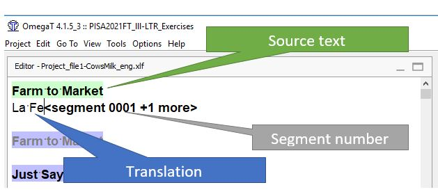
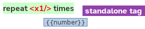
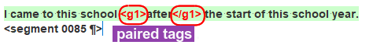
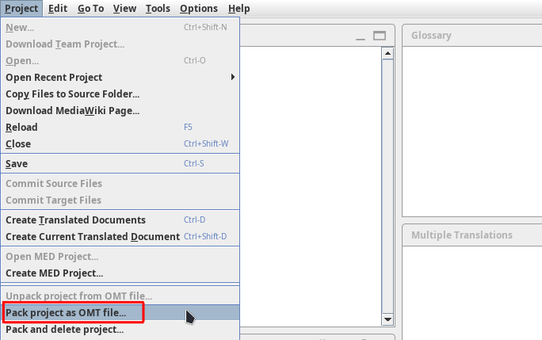
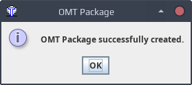
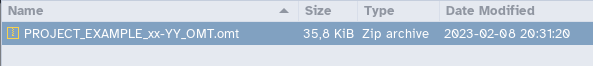

OmegaT is the open source computer-assisted translation tool (CAT tool) which will be used to translate, reconcile, adapt, review and verify materials. The software has been customized to optimize your task.
Installation and setup¶
To install OmegaT and set it up on a computer running Windows, please follow the OmegaT installation and setup guide below:
If you use Mac or Linux, please see the second slide above or get in touch through the Helpdesk.
Accessing a project¶
Tip
Please give some thought to the organization of your files and folders before you proceed with the steps below. We provide some tips here.
Accessing a new project¶
There are two ways you may access a project for the first time, depending on whether it is an online project (or team project) or an offline project.
-
If you must work on an offline project, you will receive a new OmegaT project package (aka an OMT package, or a file with
.omtextension). Go to the section Unpacking an offline project below to see what you must do to unpack a project package. -
If you must work on an online project (or team project), you will receive the URL to the repository where the OmegaT project is hosted. Go to the section Downloading a team project below to see what you must to do download a team project from a repository.
If you're not sure whether your project is online or offline, it's very easy: if you receive an OMT package, the project is offline, and if you receive a URL to a git repository, the project is online.
| You receive | Project is |
|---|---|
| OMT file | offline/package |
| URL to git repo | online/team |
Caution
Unpacking or downloading an OmegaT project (depending on the distribution mode) needs to be done only once for each project. After you have unpacked or downloaded a project, you can simply re-open it from the list of recent projects.
Unpacking an offline project¶
If you receive an OMT package, you must unpack the project (from the OMT package) to access the project for the first time.
To unpack a project, follow these steps:
-
Store the OMT package in the folder where you would like to create the OmegaT project.
-
To unpack the project from the OMT package:
-
Launch OmegaT.
-
Go to Project > Unpack project from OMT file:

-
Navigate to the location where you stored the OMT package. Select the OMT package and click on Open:

-
A pop up opens. Click Yes.

-
-
You can now perform your task in the project.
Downloading a team project¶
If you receive a URL to a git repository, you must download the team project from that repository to access the project for the first time.
Info
The URL should look a bit like this: https://some-bar-domain.com/some/path/to/the/foo-repository.git.
Authentication¶
At some point during the steps below, or afterwards, OmegaT will ask you to authenticate, so please make sure you have your credentials at hand. OmegaT might ask you to authenticate one, two or perhaps three times (depending on the project settings), please just enter the same credentials as many time as needed.
How to download the project from the repository¶
To download the team project, follow these steps:
-
Define a location in your machine where you would like to create the OmegaT project. Let's assume it's
C:/Work/(but please use whatever path is appropriate on your end).Caution
Make sure that location is not inside a sync'ed folder such as Dropbox or the like.
-
Copy the URL of the project repository.

-
In OmegaT, go to Project > Download Team Project.
-
In the Download Team Project dialog, click in the Repository URL field and then press Ctrl+V to paste the URL from your clipboard.
-
Click in the New Local Project Folder field. OmegaT will propose a path to the location where it will create the project folder.

-
You might want to modify that path to create the folder in the location that you have defined in the first step above. To do that:
- Copy the path to the location where you want to create the project, e.g.
C:/Work/.
- Then, in the New Local Project Folder field, select the part of the path up to the slash before the project folder and delete it.
- Then, press Ctrl+V to paste your path in replacement of the deleted part.

Caution
Make sure there's a slash between the path that you paste and the project folder name.
- Copy the path to the location where you want to create the project, e.g.
Closing the project¶
When you are done working for the day, quit OmegaT (Ctrl+Q).
Re-opening an existing project¶
After you have received and opened a project for the first time, the project exists in your machine and OmegaT will remember it.
The next times you want to access the project in OmegaT, go to Project > Open Recent Project. The project you were working on will appear in the list:

Note
Make sure the disctinction between opening a recent project and downloading or unpacking a new project (depending on the distribution mode) is clear. You can open a project that already exists only after you have already unpacked it or downloaded it. In turn, you only need to download or unpack (once) a project that doesn't exist yet in your machine.
Navigation¶
Navigation across panes¶
When you open OmegaT you will notice the screen is split in several panes:
- The Editor pane is the main pane in which you will be working.
- Translation suggestions will appear in the Fuzzy Matches pane (or just Matches pane).
- The Glossary pane will display the existing glossary entries and the ones you may add.
- The Multiple Translations pane will show if a repeated segment has alternative translations.

Navigation through files¶
If the project contains multiple files, they are listed in the Project Files window. The file currently open is highlighted in blue.

If you want to open a different file in the Editor pane, click on it in the Project Files window. You can also see the name of the file that is open in the Editor pane's title bar.
The following video shows navigation through files:
Navigation through segments¶
In the editor pane, the active segment is highlighted in green. This is the segment you are working on. When you type or insert a translation, it will appear right below the source text.
Press Enter on your keyboard to go to the next segment. You can also use Ctrl+U to jump to the next untranslated segment. A segment can also be activated by double clicking on it, it then becomes green.

In OmegaT, the color of the segment's background will help you find your way around between the different segments:
| Color | Language | Meaning |
|---|---|---|
| Green | Source | active segment (the segment you are working on) |
| Blue | Source | untranslated segment |
| Grey | Source | manually translated segment |
| Pink | Target | pretranslated segment |
| Orange | Target | pretranslated and locked segment (e.g. trend) |

Caution
If you want to change a trend translation, document it in the monitoring form but do not try to change it in OmegaT. Any changes you make to these segments will not be saved. The existing translation will be maintained.
The following video shows navigation through segments, enjoy :
Tags¶
What are tags¶
The source text might include some inline codes that stand for formatting or other elements. In OmegaT, those inline codes are handled as tags.
For example, part of the source text could be, say, underlined (e.g. the word "after" below):
I came to this school after the start of this school year.
The segment in OmegaT will look like this (notice the paired tags enclosing the word "after"):
I came to this school <g1>after</g1> the start of this school year.
You will recognize tags because they are in red font.
Hover over a tag if you want to see what it stands for. A tooltip will show the original inline code:

Types of tags¶
There are two types of tags: standalone tags and paired tags or double tags:
-
Standalone tags: a single tag (e.g. <x1/>) which stands for some element that appears at that position, such as a line break, an image, an input field, etc.

-
Paired tags are composed of an opening tag and a closing tag (e.g. <g2> and </g2>) and affect the text between them. You can see that two tags are paired when they have the same number.

When the source text contains paired tags around a word or expression, you must insert the same paired tags around the part of the translation that corresponds to the formatted word or expression in the source text.
For example, here the paired tags represent some formatting that applies to the word "after" and its translation "après".
I came to this school <g1>after</g1> the start of this school year.
Je suis venu à cette école <g1>après</g1> le début de cette année scolaire.
When the source text contains one or more standalone tags, you must insert them in the translation in a position that is equivalent to their position in the source text.
In the following example, the standalone tag represents a text entry field where the respondent will have to select a number:
<x1/> hours
<x1/> heures
Inserting tags¶
Before inserting tags you must know whether it is a standalone tag or two paired tags.
To insert paired tags in your translation, proceed as follows:
- Translate the segment.
- Select the part of the translation that corresponds to the formatted part in the source text.
- Press Ctrl+Space to launch the auto-completer.
- In the tags section of the auto-completer, select the paired tags you want to insert.

Info
The auto-completer has several sections, so if you don't see the tags section straight-away, just press Ctrl+Space again to cycle through the auto-completer until you see it.
To insert a standalone tag, proceed as follows:
- Click on the position where you want to insert the tag (before, after or while translating).
- Press Ctrl+Space to launch the auto-completer.
- In the tags section of the auto-completer, select the standalone tag you want to insert.

You can also insert a tag one by one with shortcut Ctrl+T.
The following video shows how to handle tags, enjoy :
Matches¶
Translations are saved in the working TM of the project. When you open a segment that is similar to one that has already been translated, you will see translation suggestions (or matches) appearing in the Matches pane.
The source text in the Matches pane uses “track changes” mode to show the differences (e.g. oldnew) between the new source text in the active segment and the source text in the fuzzy match selected.
- Parts that do not appear in the active segment are
struck through -
Parts that appear in the match are
underlined
Also, the Matches pane shows a similarity score that tells you how different the new source text is from the source text of every match.
When there are several matches for a segment, they are sorted by their similarity to the new segment. The active match is the one in bold (by default, the one at the top of the list). If you want to use a different match, double click on it to activate it.

To insert the match in full, press Ctrl+I on your keyboard. After inserting it, do not forget to make any necessary changes so that it fits the segment you are translating.
Alternatively, you can also insert only a part of the fuzzy match or combine several matches:
- Double-click the match you want to use to activate it
- With your mouse, select the part you wish to insert
- Press Ctrl+I on your keyboard to insert it
Do the same to insert (part of) other matches if appropriate or finish translating the segment.

Using the glossary¶
OmegaT supports glossaries. Your project may already contain a glossary with key terms, but you can also add terms to the glossary yourself.
Help yourself!
Adding new term pairs to the glossary might seem like extra work, but if done well it will be of valuable help to insert frequent expressions or to ensure that sensitive terms are translated consistently across the project.
Inserting terms from the glossary¶
When the active segment contains a source term that is in the glossary, it is underlined in blue in the source text. You will see the suggested target term in the Glossary pane, on the right.

OmegaT has predictive typing: when you start typing the first character of the target term in the glossary, the auto-completer will suggest the term. To insert it, press Enter on your keyboard.

Adding new entries to the glossary¶
Tip
Feeding the glossary with technical or sensitive wording or terms or expressions that appear frequently can be very useful to speed up typing, to keep consistency, to avoid typos, etc..
To add a new term entry to the glossary:
- In the active segment, drag your mouse over the term you want to insert to select it.
-
Right click and choose Add glossary entry from the contextual menu.

-
In the Create Glossary Entry that will pop up, enter the target term (and any comments you want).

-
Press the OK button to save the new entry.
Handling repetitions¶
Some segments may be repeated in the project. By default, the translation of a repeated segment is autopropagated to all its instances.
Identifying repeated segments¶
You can recognize that you are in a repeated segment because the Segment Properties pane will show a field called Is duplicate (with value FIRST for the first repetitions and value NEXT for any others).

Also, the segment number also includes how many more repetitions the active segment has.
Also, repeated segments from the second instance onwards have grey font, which could help you realize they are instances of a repeated segment.
If you right click on a repeated segment, the contextual menu will list all the other instances. It can be useful to jump to them (by clicking on one of them from the contextual menu) to see the different contexts in which that repeated segment appears in the project.

Autopropagation¶
When you edit the translation of a repeated segment, as soon as the edit is saved the changes will be automatically reflected in all the repetitions in the project.

Create alternative translation¶
In some cases, two instances of a repeated segment might need to be translated differently in different contexts. In that situation, you may want to modify the translation of only one of the repetitions without altering the rest.
In other words, you must create an alternative translation to prevent auto-propagating your update.
To create an alternative translation:
- Right click on the segment and choose Create Alternative Translation from the contextual menu.
- Edit the translation of the active segment.
- Press Ctrl+S to register the alternative translation.
The Multiple Translations pane will show the different translations.
And here's a quick summary:

Danger
Alternative translations may be treacherous if not applied correctly. Make sure you follow the three steps above precisely.
The following video shows how to create alternative translations, enjoy :
Other useful features¶
Inserting source segment in target¶
In some cases, the translation must be identical to the source text. To copy the source text in the translation, press Ctrl+Shift+S on your keyboard.

Of course, you may also copy-paste the source text in the translation if you prefer.
Creating an empty translation¶
All segments must have a translation, even if it's an empty translation. If you want to produce an empty translation, simply press the space bar in your keyboard to insert a space as the translation.
Inserting special characters¶
You may need to type special characters such as:
- quotation marks:
«»,„“,‘’, etc. - mathematical symbols:
×,π,÷,≤,≠,√, etc. - superindex or subindex numbers or letters:
₂,²,³, etc. - other characters:
®,™, etc.
Character table¶
We put the most frequent special characters in the Character Table. To insert a special character from the Character Table, follow these steps:
- Press Ctrl+Space on your keyboard several times until you reach the Character Table.

- Double-click the character you want to insert.
Autotext¶
Alternatively, you may use Autotext entries to insert a special character by typing a shortcut. You can see the list of available shortcuts here.
Let's see some examples:
-
For example, to write the abbreviation of square meters ("m²"), you can type shortcut
\sup2to insert superindex character². -
Another example: in chemical formulas, the number of atoms is often noted with a subindex number, e.g. "CO₂". To insert character
₂, type shortcut\sub2.
-
In order to insert a non-breaking space, type
\nbsp: the auto-completer will propose to insert the character from the autotext list.
Running concordance searches¶
A concordance search allows you to find words and expressions in the translation memory and the glossary.
To perform a search follow the steps below:
- In the active segment, select the word or fragment you want to search for with your mouse.
- While that part of the text is selected, press Ctrl+F on your keyboard.
- Press the Search button in the Search window that will open.
The list results will be displayed. You can copy (select with mouse and press Ctrl+C on your keyboard) what you need from the results and paste it in the right place in the translation.

Note
There might be small differences (in punctuation, spacing, etc.) between the text you're searching for and other occurrences of the same text that would prevent an exact match. The option "Keyword search" might help overcome that problem, please use it if you don't get the results you were expecting.
QA checks¶
Completion check¶
All segments in the project must have a translation. To confirm that is the case, please check for completion before your delivery.
To check completion, hover with your mouse pointer over the progress status bar, in the bottom right corner of OmegaT's main window.

That bar shows some statistics:
- unique translated (unique left) per file (e.g.
100% (0 left)as above) - unique translated (unique left) per project (e.g.
100% (0 left)as above) - total number of segments (e.g.
54as above)
If you see something like 100% (0 left) / 100% (0 left), 54, that means that all 54 segments in the project are translated. If you see a number higher that zero segments left, the translation is not complete.
If you have left some segment(s) untranslated, proceed as follows to fix that:
- Press Esc to close the Project Files window.
- Press Ctrl+U on your keyboard to jump to the Next Untranslated Segment.
- Translate the segment
Repeat the steps above until no untranslated segments remain.
Finally, check the progress status bar again to confirm completion.
Check and fix tags¶
To ensure that all tags have been inserted correctly:
-
Go to Tools > Check Issues to open the Issues window.
Tip
You may untick the other checks (Spelling, Terminology, LanguageTool) if you want to focus on tags only first.

-
Press OK.
-
An error report will open.

-
Go through the issues one by one. For every issue in the list, do the following:
- Click a row in the list (or click on Jump to Segment) to open that segment in the editor
- Fix the tag issue (as explained in the Fixing tag issues section)
- Press the Refresh button to update the list of issues.
Avoid
Please do not click on "Apply fix". Fix each issue manually.
Tip
If the source text has tags that you do not use in your language, you can insert them at the end of the segment to avoid having false positives in the error report. That should not have an impact on the translation.
Check glossary adherence¶
You can check whether the translation adheres to the glossary and key terms have been translated consistently throughout:
- Go to Tools > Check Issues
-
Make sure the box next to Terminology Issues is ticked

-
Press OK
-
A list of potential errors will open:

-
Go through the issues one by one. For every issue in the list, do the following:
- Click a row in the list (or click on Jump to Segment) to open that segment in the editor.
- Correct the error if necessary.
- Press the Refresh button to update the list of issues.
Info
Not all flagged issues are errors by default. In some cases, you may get false positives. In the screenshot below, "apple trees" should be translated as "pommiers" as in the first segment. In the second segment (active segment) "apple trees" was rendered as "ces arbres" (backtranslation: these trees) to avoid a repetition that would be disturbing in French. Such deviations from the glossary are intentional, so you would disregard the issue.

Creating target files¶
A target file (or translated document) has the same structure as the source file but contains the target text (your translation).
If you need to use the target file directly, you must create it every time you update the translation in the editor.
Press Ctrl+Shift+D (or go to Project > Create Current Translated Document) to create the target file you were working on.
To access the file(s), go to Project > Access Project Contents > Target Files to open your file explorer in the /target folder of the project. The file you were working on should be there.

Info
The target file will be overwritten every time you press Ctrl+Shift+D
Delivery¶
Once you have finished your task in the OmegaT project and have performed the relevant QA checks, you need to deliver the project. The delivery mode will vary depending on whether it's an offline project or a team project.
Online / team project (via repository)¶
To deliver from a team project:
- Go to Project > Commit Target Files.
That's it! 
Offline project (via package)¶
-
Go to Project > Pack project as OMT file...

-
In the window that pops up, select the location where you want to save the OMT package.
-
Press Save
-
Press OK in the Pop-up window notifying that the package was successfully created.

The folder where exported package is stored will open automatically in your file explorer.
You will recognize the package because it has the extension .omt. That's the file you have to deliver.

OmegaT shortcuts¶
Here is a table summarizing all functions you need to remember to work in OmegaT. Shortcuts (keyboard combinations) are provided if they are frequently used.
| Shortcut | Action | Function |
|---|---|---|
| Ctrl+L | Project > Project Files | Open the Project Files window |
| Ctrl+J | Go To > Segment Number… | Go to the segment thus numbered |
| Ctrl+Space | N/A | Press several times to open Character table |
| Ctrl+U | Go To > Next Untranslated Segment | Go to the next untranslated segment |
| Ctrl+T | Edit > Insert Next Missing Tag | Insert the next missing tag |
| Enter | Go to Next Segment | |
| Ctrl+I | Insert active fuzzy match or selection of fuzzy match | |
| N/A | Right click > Create Alternative Translation | Mark a segment as alternative translation |
Ctrl+Shift+S |
Mark a segment as a translation identical to the source | |
| Ctrl+Shift+V | Tools > Check issues | Run the QA checks |
| Ctrl+Shift+D | Project > Create Current Translated Document | Export or generate the target file for the current document |
| Ctrl+D | Project > Create Translated Documents | Export or generate all target files |
| N/A | Project > Access Project Contents > … | Go to the project folders |
| Shift+F3 | Change capitalization of selected text |